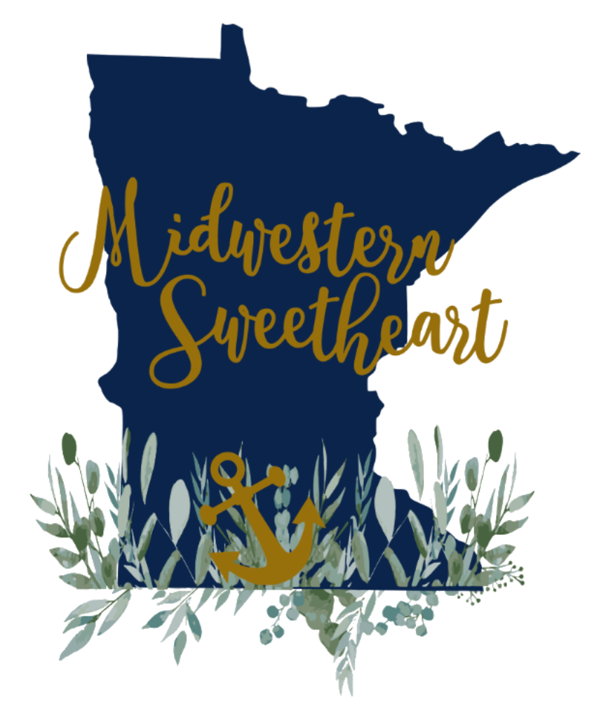

About Me and My Business
Hi there! I'm the heart and hands behind Midwestern Sweetheart, a small craft business rooted in Midwestern charm and Southern soul. What started as a creative outlet while my husband served in the military has grown into a joyful passion — one stitch, one engraving, one cozy creation at a time.
From handmade pillowcases and custom t-shirts to bowl cozies and engraved wood pieces, everything I make is crafted with care, warmth, and a touch of home. These aren't just products — they're pieces of comfort, connection, and creativity.
Whether you're shopping for a gift, a little something for yourself, or just browsing, I'm so glad you're here. Thank you for supporting handmade and for being part of this journey.